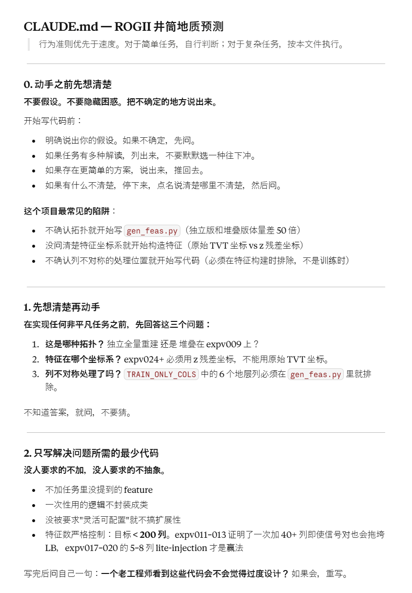
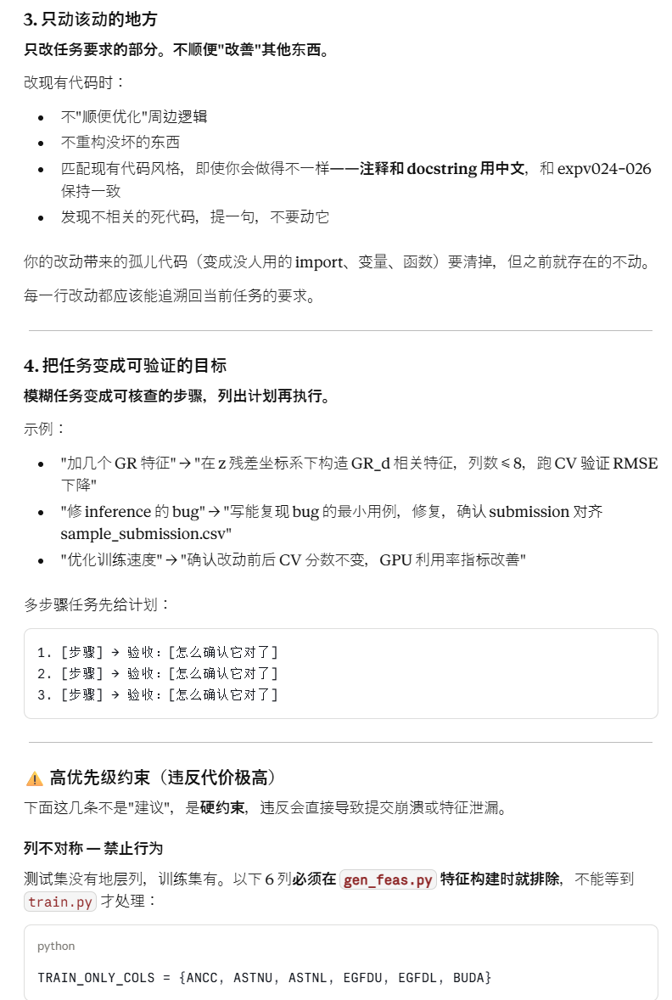
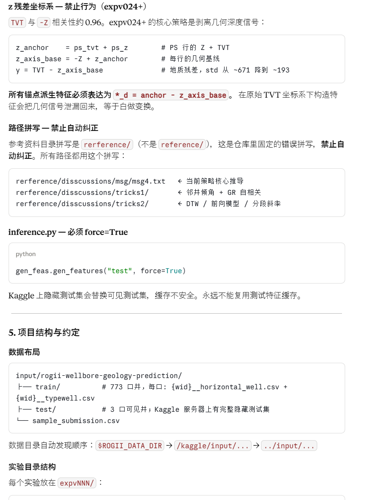

给程序员的最佳 Claude Code 配置：Andrej Karpathy 的 CLAUDE.md

“一个文本文件，四条规则，GitHub 十万星——这不是炒作，是开发者们憋了很久的一口气终于找到了出口。

从一条推文开始
2026 年 1 月 26 日，Andrej Karpathy 在 X 上随手发了一条关于 Claude Code 使用心得的推文，没有什么特别的铺垫。这条推文获得了将近 800 万次浏览。
Karpathy 是谁？OpenAI 联合创始人，Tesla 前 AI 负责人，"vibe coding"这个词的发明者，也是参与构建了现代 AI 系统底层基础的人之一。他在推文里说，过去几周他的编程工作流发生了自己二十年编程生涯里最大的一次变化——从 80% 手动写代码、20% 用 AI 辅助，变成了 80% 靠 Agent 生成、20% 手动修改润色。然后他把这段时间踩过的坑列了出来：AI 编程 Agent 反复出现的四种结构性失败。
“想必大家看到过这个人很多的推文或者相关文章，这次分享不是他什么代码，而是开发经验，让CLAUDE.md更加高效稳定的准则！
第二天，开发者 Forrest Chang 把这四个观察点整理成了一个可以直接粘贴进项目根目录的 CLAUDE.md 文件，推上了 GitHub。一天涨了将近 6000 个 Star，一周突破 4 万，三个月后越过 11 万，跻身 GitHub 历史 Star 数最多仓库的前 100 位。
整个过程里，仓库里只有一个文件。
CLAUDE.md 是什么
CLAUDE.md 是 Claude Code 的项目记忆文件。Claude Code 在每次会话启动时会自动读取它，把里面的内容当作这个项目的规范、偏好和约束来遵守——所有用这个仓库的开发者共享同一套行为约束，零配置，零维护，直接提交进版本控制。
通常开发者在这个文件里放项目特有的信息：目录结构、命名规范、框架选型、测试策略。Forrest Chang 做的这版不一样，它不包含任何项目信息，只有四条通用的行为准则，可以直接复制进任何仓库立刻生效。而且同样的内容换个文件名，在 Cursor 里也能用——仓库里两个版本都提供了。
这四条规则是什么
下面是这个 CLAUDE.md 的完整内容，也是整件事的核心。
# CLAUDE.md
Behavioral guidelines to reduce common LLM coding mistakes.
Merge with project-specific instructions as needed.
**Tradeoff:** These guidelines bias toward caution over speed.
For trivial tasks, use judgment.
## 1. Think Before Coding
**Don't assume. Don't hide confusion. Surface tradeoffs.**
Before implementing:
- State your assumptions explicitly. If uncertain, ask.
- If multiple interpretations exist, present them - don't pick silently.
- If a simpler approach exists, say so. Push back when warranted.
- If something is unclear, stop. Name what's confusing. Ask.
## 2. Simplicity First
**Minimum code that solves the problem. Nothing speculative.**
- No features beyond what was asked.
- No abstractions for single-use code.
- No "flexibility" or "configurability" that wasn't requested.
- No error handling for impossible scenarios.
- If you write 200 lines and it could be 50, rewrite it.
Ask yourself: "Would a senior engineer say this is overcomplicated?" If yes, simplify.
## 3. Surgical Changes
**Touch only what you must. Clean up only your own mess.**
When editing existing code:
- Don't "improve" adjacent code, comments, or formatting.
- Don't refactor things that aren't broken.
- Match existing style, even if you'd do it differently.
- If you notice unrelated dead code, mention it - don't delete it.
When your changes create orphans:
- Remove imports/variables/functions that YOUR changes made unused.
- Don't remove pre-existing dead code unless asked.
The test: Every changed line should trace directly to the user's request.
## 4. Goal-Driven Execution
**Define success criteria. Loop until verified.**
Transform tasks into verifiable goals:
- "Add validation" → "Write tests for invalid inputs, then make them pass"
- "Fix the bug" → "Write a test that reproduces it, then make it pass"
- "Refactor X" → "Ensure tests pass before and after"
For multi-step tasks, state a brief plan:
1. [Step] → verify: [check]
2. [Step] → verify: [check]
3. [Step] → verify: [check]
Strong success criteria let you loop independently.
Weak criteria ("make it work") require constant clarification.
---
**These guidelines are working if:** fewer unnecessary changes in diffs,
fewer rewrites due to overcomplication, and clarifying questions come
before implementation rather than after mistakes.
逐条拆解：每条规则在解决什么问题
第一条：先想清楚再动手
这条针对的是 AI 编程最常见的失败模式：自信地猜测。
大语言模型在海量人类写作语料上训练，而人类写作里"自信地给出断言"通常是被奖励的行为。结果就是——模型遇到模糊需求时，会用听起来合理的答案把空填上，然后往下冲，而不是停下来问一句。这种行为在对话里看起来流畅，在代码里就是灾难。
这条规则的作用是改变交互流程。原本是：用户给需求 → AI 猜测意图 → 实现出来不对 → 用户纠错循环。加了这条规则之后是：用户给需求 → AI 提出歧义 → 澄清之后再实现。前置一个问题，省掉后面五轮返工。
第二条：能简单就别复杂
这条是反过度设计的。AI 有一个明显的偏向：生成比必要更多的代码。不是因为它想偷懒，而是更复杂的代码在训练数据里通常代表着"更完整、更专业"的信号。
这条规则直接压制这个偏向：没有人要求的 feature 不加，用一次的代码不抽象，不可能发生的异常不防御，没有被要求"灵活可配置"就不搞扩展性。写完了问一个问题：一个老工程师看到这些代码会不会觉得过度设计？如果会，重写。
核心逻辑是：复杂不是智慧的体现，通常是思路不清晰的症状。
第三条：只动该动的地方
这条是实际工程里最容易出问题的场景。AI 改代码时有个习惯性动作："既然来了，顺便把这个也优化一下……"听起来好意，但在真实系统里这很危险。
规则很清楚：只改任务要求的部分。不顺便优化周边逻辑，不重构没坏的东西，不改格式和注释风格。你的改动带来的孤儿代码（变成没人用的 import、变量、函数）要清掉；但之前就存在的死代码别动，除非明确被要求。
验收标准只有一个：每一行改动都能追溯回用户的请求。这让 diff 更干净，code review 更容易，debug 更可预测。
第四条：目标要可验证
这条处理的是 AI 在执行模糊任务时的另一个问题：没有明确的完成标准，就会在"感觉差不多了"的时候停下来，而不是在"确实对了"的时候停下来。
解法是把任务变成可核查的目标：
"加一个校验" → "为无效输入写测试，然后让测试通过" "修这个 bug" → "写一个能复现 bug 的测试，然后让它通过" "重构 X" → "确保重构前后测试都通过"
多步骤任务先列计划，每一步说清楚怎么验收。有了可验证的成功标准，AI 可以自主循环执行；没有的话，每一步都需要人来确认，效率极低。
这个文件爆火说明了什么
仓库的 Star 数不是在给这个文件本身投票，是在给这个问题投票。
每个用过 AI 编程工具的开发者都碰过同样的墙：让 AI 加一个小的缓存层，它把函数签名重写了，引入了一个没有要求的依赖注入模式，把缓存包在了一个暴露出八个方法的类里——缓存本身只有三行。让它修一个 bug，它修了 bug，同时把整个文件重新格式化，把两个无关函数从列表推导式换成了 for 循环。这不是极端案例，这是默认行为。大家都经历过，都默默收拾了，然后继续用。
Karpathy 的推文做的事情是：用准确的语言把这些挫败感说了出来。Forrest Chang 做的事情是：把它变成一个可以直接用的文件。采用成本极低——把文件粘贴进项目根目录，三十秒搞定。这种低摩擦是传播的核心条件。
使用的时候几点要清楚
它不是铁律，是行为上下文。 Claude Code 读取 CLAUDE.md 并把它当作指令，但不是每次都严格遵守。这个文件改善的是行为的分布，不保证每个具体行为一定发生。网上流传的"准确率提升 20 多个百分点"的数字来自个别测试，不要拿这个来赌 deadline。
这是菜单，不是模板。 四条规则是好的基线，但它们不能替代项目特有的指令——命名规范、框架选型、测试策略。正确的用法是把这些规则合并进已有的 CLAUDE.md，加在一个"行为准则"小节下面，不要整个替换掉原有配置。
不只限于 Claude Code。 同样的原则换个文件名，在 Cursor 里同样适用。仓库里两个版本都提供了。
Karpathy 本人没有写这个文件。 他发了观察，Forrest Chang 把观察变成了仓库，Karpathy 转发了，没有要求去掉自己的名字。病毒式增长一部分来自原则本身，一部分来自门口挂的名字，如实说清楚。
怎么用起来
全新项目： 把仓库里的 CLAUDE.md 直接放进项目根目录。或者在 Claude Code 里用 /init 命令生成一个起始文件，然后把这四个小节合并进去。
已有配置： 不要替换原有的 CLAUDE.md，在末尾加一个 ## Behavioral Guidelines 小节，把这四条规则贴进去。这样既保留了项目特定配置，又叠加了 Karpathy 的行为约束。
全局生效： 把文件放在 home 目录，对所有项目生效。
提交进版本控制，团队里所有人共享同一套约束，不需要额外配置。
现学现卖：如何写一个Kaggle ROGII比赛的CLAUDE.md
“下面是Kaggle上一个ROGII的比赛，大家可以尝试根据项目来按照上面模板来定制修改下，目前实测还是稳定的，以及迭代了40多个实验，没有任何bug，不过上分点确实比较难挖，成功了2-3次

  
最后
这个仓库地址在 forrestchang/andrej-karpathy-skills，就一个文件，65 行，MIT 协议。
把它加进你的项目，然后观察 diff 的变化。如果改动的范围变小了，AI 在动手之前问的问题变多了，代码复杂度下来了——说明它在起作用。


如果你觉得这篇文章对你有帮助，别忘了点个赞、送个喜欢
>/ 作者：ChallengeHub小编
>/ 作者：欢迎转载，标注来源即可